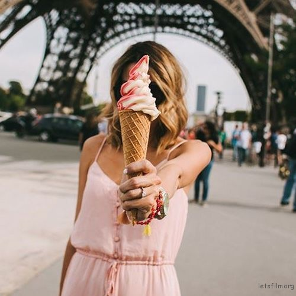
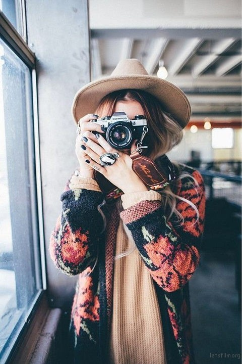

2017-03-15 06:36:00 蜂鸟网 作者：胶片的味道 [转载]
爱美之心人皆有之，尤其是正值青春芳华的女孩纸，她们在出门前总是会花数小时捯饬自己可爱的小脸蛋，总是会为衣橱里缺少的那一件衣服纠结不已。但就算她们每次出门都是光鲜亮丽，就算你觉得她们不可方物。有一些女孩却总是没什么自信，总觉得自己不上镜，不会找角度，不会摆姿势，于是她们躲避镜头，不想让你给她们拍照。
除非让她们自己看着屏幕自拍，然后再不停的美颜才敢发出去，然后还文字说明自己今天好丑。其实拍照很简单，只要你会摆pose。
1、用小物件来遮挡面容
被拍的难度要比自拍大的多，做模特儿也不是这么容易的，不是长得好看就可以了，虽然颜值拯救一切，但是追求完美主义的你肯定不想让自己看起来面容呆滞动作僵硬吧。
给不上镜的害羞女生 拍照时你应该这么摆pose
更多的时候是因为你们太少面对镜头，缺少面对镜头时的自信，于是不知道手应该放哪儿，要做什么表情才好。
这些问题困扰着你，何不拿起身边的小物件，挡住自己的脸，避免这种尴尬呢？其实这些也是你们平时躲避友人拍照的常用手段，干脆就把这些光明正大的表现出来吧。
不断拯救了尴尬的双手，还不需要刻意的去想怎么做表情。

2、谁说拍照一定要看镜头
早先我就说过，人像的终极奥义就是不拍脸，尤其是对于那些面对镜头没有自信的女生。当镜头对准她们的脸的时候，她们往往都会因为缺乏经验而不知所措，呆滞的表情，俗套的剪刀手，僵硬的动作，最后都会变成这样，相信这些也不会是你所想要拍的。
其实干嘛要拍脸呢？女孩子的身体也是多么的美好啊。不管是背影还是侧面，不管是低头还是回眸，不要管镜头，做你该做的，被抓住的真实瞬间才是最美的。也会避免让你在面对镜头时的紧张尴尬。
3、用身边的配件给自己加分
在外度假的女孩子总是不可避免的想要拍照，但是又担心自己落入千篇一律的游客照。其实在外面玩，你一定会带着帽子或者墨镜，这些随身小配件就能轻松的给自己加分。

不敢直面镜头的你，可以用这些小配件来修饰自己的面容，来营造出自己小脸的感觉。
给不上镜的害羞女生 拍照时你应该这么摆pose
4、谁说拍照一定要笑
不知道从什么时候开始，我们被一种奇怪的定势所左右，那就是拍照的时候一定要面露笑容，以为这样的才是最美的，其实年轻的你本来就已经是最美的，拍照为什么一定要笑呢？
给不上镜的害羞女生 拍照时你应该这么摆pose
你可以面无表情可以搞怪，最真实的你才是最美的。拍照这么美好的事儿，何必要害羞的，只要你有颜值有身材，你爱镜头，镜头也会爱你们的。